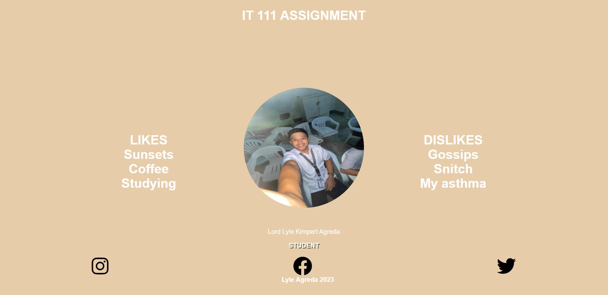
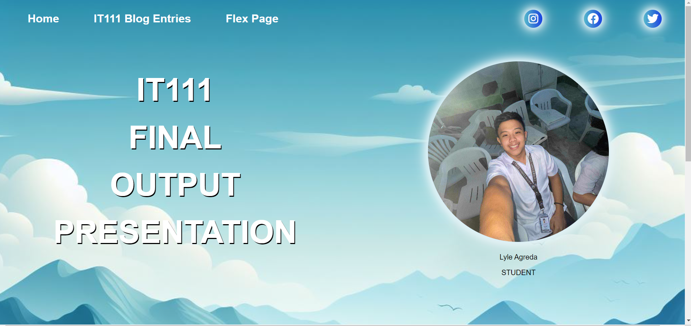

Home
IT111 Blog Entries
Flex Page
IT111 BLOG ENTRIES
CHAPTER 1: Computing
The evolution of technology began with the Mechanical era (1642-1934) marked by mechanical inventions, followed by the Vacuum tubes era (1935-1946) that introduced electronic devices, the Transistors era (1947-1962) that miniaturized electronics, the Integrated circuit era (1963-1972) that revolutionized computing with microchips, and the ongoing PC & VLSI era (1972-present) characterized by personal computers and billions of transistors on a single chip.
CHAPTER 2: Professions and Careers in Computing
Programming and Software Development, Information Systems Operation and Management, Telecommunications and Networking, Web/Internet, Computer Science Research, Graphics and Multimedia, and Training and Support are all distinct yet interconnected fields within the broad domain of Information Technology, each with its own specific focus and applications.
CHAPTER 3: Information Processing Cycle
Data vs. Information refers to the distinction between raw, unprocessed facts (data) and processed, meaningful details (information), while Data Processing is the conversion of this raw data into useful information through various steps.
CHAPTER 4: Introduction to Computer Systems
The four main components of a computer system are the Input Unit, which converts user input into binary language, the Central Processing Unit (CPU), which processes the information, the Output Unit, which displays the results, and the Storage, which holds data and instructions.
CHAPTER 5: Basic Concepts of Computer Security
Cybercrimes are illegal activities conducted via the internet, with various types committed by different kinds of cyber criminals, while cyber-attacks are malicious attempts to breach or exploit a system, and countermeasures are the defenses or actions taken to prevent or mitigate these attacks.
 
LESSON THAT CHALLENGE ME THE MOST
This is the Lesson that challenged me the most. Webpage development challenge me the most because it was hard compared to the other lesson, my output here is just simple and I didn't put too much effects and make it simple to be presentable.